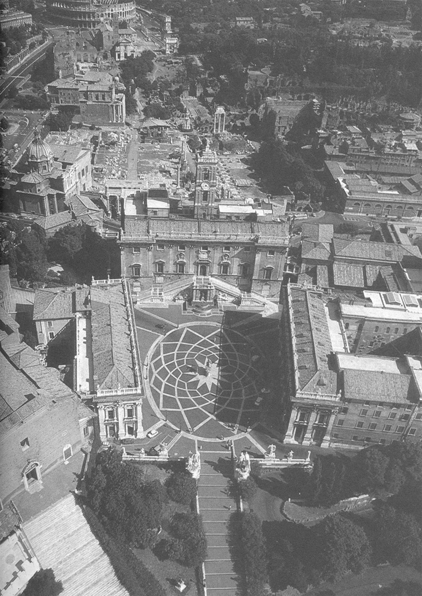

<!doctype html>
<html lang="en">
<head>
  <meta charset="utf-8">
  <meta name="viewport" content="width=device-width, initial-scale=1">
  <link rel="icon" href="data:image/svg+xml,<svg xmlns=%22http://www.w3.org/2000/svg%22/>">
  <title>Jianhong Deng - Architecture Works</title>
  <style>
    :root {
      --paper: #ffffff;
      --ink: #050505;
      --muted: #555;
      --side: clamp(18px, 5vw, 96px);
      --top: clamp(34px, 5.4vh, 64px);
      --project-stage-width: min(706px, 75vw);
      --project-stage-offset: clamp(48px, 7vh, 72px);
      --project-caption-space: 145px;
      --project-image-height: calc(100vh - var(--top) - 64px - var(--project-stage-offset) - var(--project-caption-space));
      --project-arrow-size: 28px;
      --project-arrow-gap: clamp(14px, 2.2vw, 24px);
      --font: "Neue Haas Grotesk Text Pro", "Neue Haas Grotesk Display Pro", "Neue Haas Grotesk", "Helvetica Neue", Helvetica, Arial, sans-serif;
      --serif: var(--font);
      --sans: var(--font);
      font-family: var(--font);
    }

    * {
      box-sizing: border-box;
    }

    html {
      height: 100%;
      background: var(--paper);
      scroll-behavior: smooth;
      overflow: hidden;
    }

    body {
      height: 100%;
      margin: 0;
      background: var(--paper);
      color: var(--ink);
      font-size: 14px;
      line-height: 1.45;
      letter-spacing: 0;
      overflow: hidden;
    }

    a {
      color: inherit;
      text-decoration: none;
    }

    button {
      padding: 0;
      border: 0;
      background: transparent;
      color: inherit;
      font: inherit;
      cursor: pointer;
    }

    .page {
      display: none;
      height: 100vh;
      padding: var(--top) var(--side) 64px;
      background: #fff;
      overflow: hidden;
    }

    .page.is-active {
      display: block;
    }

    .logo,
    .project-nav .top-logo {
      display: block;
      width: max-content;
      margin: 0 auto;
      font-family: var(--serif);
      font-size: 25px;
      font-style: normal;
      font-weight: 400;
      letter-spacing: .22em;
      transform: translateX(.11em);
      line-height: 1;
    }

    .logo-box {
      min-width: 176px;
      padding: 34px 44px 35px;
      border: 3px solid var(--ink);
      border-radius: 4px;
    }

    .home {
      position: relative;
      text-align: center;
    }

    .home-plate {
      position: absolute;
      left: 50%;
      top: 50%;
      width: min(706px, 75vw, 46.7vh);
      display: flex;
      flex-direction: column;
      align-items: center;
      transform: translate(-50%, -52%);
    }

    .home-kicker {
      margin: 22px 0 0;
      font-size: clamp(12px, .95vw, 14px);
      font-weight: 300;
      line-height: 1.2;
      letter-spacing: .08em;
    }

    .home-image-link {
      position: relative;
      display: grid;
      place-items: center;
      width: 100%;
      margin: clamp(68px, 8vh, 88px) 0 0;
      color: var(--ink);
      isolation: isolate;
    }

    .home-image,
    .project-image {
      display: block;
      height: auto;
      object-fit: contain;
      background: #fff;
    }

    .home-image {
      max-width: min(706px, 75vw);
      max-height: min(66vh, 760px);
      width: auto;
      margin: 0 auto;
      transition: opacity 240ms ease;
    }

    .home-image-link:hover .home-image,
    .home-image-link:focus-visible .home-image {
      opacity: .62;
    }

    .home-image-link:focus-visible {
      outline: 1px solid var(--ink);
      outline-offset: 10px;
    }

    .home-base {
      margin: 28px 0 0;
      font-size: clamp(12px, 1vw, 14px);
      font-weight: 300;
      line-height: 1.45;
      letter-spacing: .02em;
    }

    .menu {
      min-height: 100vh;
      padding-top: 8px;
      position: relative;
      text-align: center;
      overflow-y: auto;
    }

    .menu.is-active {
      display: block;
    }

    .project-list {
      position: relative;
      width: min(640px, 76vw);
      margin: clamp(96px, 16vh, 132px) auto 0;
      display: grid;
      box-sizing: border-box;
      text-align: left;
    }

    .project-group {
      display: grid;
    }

    .project-group + .project-group {
      margin-top: 0;
    }

    .project-divider {
      height: 1px;
      margin: 2px 0;
      background: rgba(5, 5, 5, .72);
    }

    .project-section-label {
      padding: 13px 0 10px;
      color: var(--muted);
      font-size: 11px;
      font-weight: 400;
      letter-spacing: .08em;
      text-transform: uppercase;
    }

    .project-row {
      display: grid;
      grid-template-columns: 34px minmax(0, 1fr) 44px minmax(140px, .86fr);
      column-gap: 14px;
      align-items: baseline;
      min-height: 54px;
      padding: 12px 0 11px;
      font-size: 13px;
      line-height: 1.25;
      letter-spacing: .015em;
    }

    .archive-closing {
      width: min(640px, 76vw);
      margin: 18px auto 0;
      color: var(--muted);
      font-size: 11px;
      line-height: 1.3;
      letter-spacing: .04em;
      text-align: left;
    }

    .project-row:hover,
    .project-row:focus-visible,
    .text-link:hover,
    .info-link:hover {
      font-style: italic;
    }

    .project-row.is-note {
      color: var(--muted);
      cursor: default;
    }

    .project-row.is-note:hover {
      font-style: normal;
    }

    .project-row:focus-visible {
      outline: 1px solid var(--ink);
      outline-offset: 8px;
    }

    .project-number,
    .project-year,
    .project-type {
      color: var(--muted);
      font-size: 12px;
    }

    .project-title {
      color: var(--ink);
      font-size: 14px;
    }

    .project {
      text-align: center;
    }

    .project.no-scroll {
      overflow: hidden;
    }

    .project-stage {
      position: relative;
      width: var(--project-stage-width);
      margin: var(--project-stage-offset) auto 0;
      height: calc(100vh - var(--top) - 64px - var(--project-stage-offset));
      display: grid;
      grid-template-rows: var(--project-image-height) auto auto;
      align-content: start;
    }

    .project-image-wrap {
      display: grid;
      place-items: center;
      height: var(--project-image-height);
      min-height: 0;
      overflow: hidden;
    }

    .project-image {
      max-width: min(706px, 75vw);
      max-height: var(--project-image-height);
      width: auto;
      height: auto;
      object-fit: contain;
      margin: 0 auto;
    }

    .project-caption {
      margin-top: 24px;
      display: grid;
      gap: 11px;
      justify-items: center;
      font-size: 13px;
    }

    .project-caption strong {
      font-size: 14px;
      font-weight: 600;
    }

    .project-caption span {
      color: var(--ink);
      font-size: 12px;
    }

    .project-caption .counter {
      margin-top: 2px;
      color: var(--muted);
      font-family: var(--sans);
      font-size: 10px;
      letter-spacing: .08em;
    }

    .info-link {
      margin-top: 26px;
      display: inline-block;
      font-size: 13px;
      text-transform: uppercase;
    }

    .hit {
      position: fixed;
      top: calc(var(--top) + var(--project-stage-offset) + (var(--project-image-height) / 2));
      z-index: 3;
      width: var(--project-arrow-size);
      height: var(--project-arrow-size);
      transform: translateY(-50%);
      color: var(--ink);
      cursor: pointer;
    }

    .hit::before,
    .hit::after {
      content: "";
      position: absolute;
      top: 50%;
      display: block;
      border-top: 1px solid var(--ink);
    }

    .hit::before {
      left: 4px;
      right: 4px;
      transform: translateY(-50%);
    }

    .hit::after {
      width: 9px;
      height: 9px;
    }

    .hit.prev {
      left: max(18px, calc(50% - (var(--project-stage-width) / 2) - var(--project-arrow-gap) - var(--project-arrow-size)));
    }

    .hit.prev::after {
      left: 4px;
      border-left: 1px solid var(--ink);
      transform: translateY(-50%) rotate(-45deg);
    }

    .hit.next {
      right: max(18px, calc(50% - (var(--project-stage-width) / 2) - var(--project-arrow-gap) - var(--project-arrow-size)));
    }

    .hit.next::after {
      right: 4px;
      border-right: 1px solid var(--ink);
      transform: translateY(-50%) rotate(45deg);
    }

    .project-nav {
      position: fixed;
      z-index: 5;
      left: var(--side);
      right: var(--side);
      top: var(--top);
      display: grid;
      grid-template-columns: 1fr auto 1fr;
      align-items: start;
      pointer-events: none;
    }

    .project-nav a {
      pointer-events: auto;
      font-size: 12px;
      font-style: italic;
    }

    .project-nav .back {
      justify-self: start;
    }

    .project-nav .top-logo {
      justify-self: center;
    }

    .project-nav .about-link {
      justify-self: end;
    }

    .info-page {
      padding-top: 0;
      font-family: var(--serif);
      text-align: left;
    }

    .info-sheet {
      width: min(640px, 76vw);
      margin: clamp(96px, 16vh, 132px) auto 0;
      max-height: calc(100vh - clamp(96px, 16vh, 132px) - 64px);
      overflow-y: auto;
      overflow-x: hidden;
      scrollbar-width: none;
    }

    .info-sheet::-webkit-scrollbar {
      display: none;
    }

    .info-sheet h1 {
      margin: 0 0 10px;
      font-size: 14px;
      line-height: 1.2;
      font-weight: 600;
    }

    .rule {
      height: 1px;
      margin: 10px 0 14px;
      background: var(--ink);
    }

    .facts {
      margin: 0;
      display: grid;
      grid-template-columns: 96px minmax(0, 1fr);
      column-gap: 0;
      row-gap: 4px;
      font-size: 13px;
      line-height: 1.25;
    }

    .facts dt,
    .facts dd {
      margin: 0;
    }

    .facts dt {
      color: var(--muted);
    }

    .info-copy {
      margin-top: 28px;
      max-width: 640px;
      font-size: 14px;
      line-height: 1.42;
    }

    .info-copy p {
      margin: 0 0 18px;
    }

    .zh-copy {
      margin-top: 22px;
      max-width: 640px;
      color: var(--muted);
      font-size: 12px;
      line-height: 1.58;
    }

    .zh-copy p {
      margin-bottom: 14px;
    }

    .close-link {
      display: inline-block;
      margin-top: 8px;
      font-family: var(--sans);
      font-size: 28px;
      line-height: 1;
    }

    @media (max-width: 780px) {
      :root {
        --project-stage-width: calc(100vw - 36px);
        --project-stage-offset: 0px;
        --project-caption-space: 138px;
        --project-image-height: calc((100vw - 36px) * .5625);
        --project-arrow-size: 30px;
        --project-arrow-gap: 6px;
      }

      .page {
        padding: 28px 18px 44px;
      }

      .logo,
      .project-nav .top-logo {
        font-size: 22px;
      }

      .logo-box {
        min-width: 168px;
        padding: 28px 38px 29px;
      }

      .home-plate {
        width: min(82vw, 420px, 46.7vh);
      }

      .home-image {
        max-width: min(82vw, 420px);
        max-height: min(66vh, 620px);
      }

      .project-list {
        width: min(354px, 100%);
        margin: 40px auto 0;
      }

      .project-group + .project-group {
        margin-top: 0;
      }

      .project-divider {
        margin: 2px 0;
      }

      .project-row {
        grid-template-columns: 38px 1fr;
        row-gap: 4px;
        column-gap: 16px;
        min-height: 0;
        padding: 10px 0;
        line-height: 1.16;
      }

      .project-title {
        font-size: 13px;
      }

      .project-number,
      .project-year,
      .project-type {
        font-size: 11px;
      }

      .project-year,
      .project-type {
        grid-column: 2;
      }

      .project-type {
        margin-top: -2px;
      }

      .project-section-label {
        padding: 10px 0 8px;
        font-size: 10px;
      }

      .archive-closing {
        width: min(354px, 100%);
        margin-top: 14px;
        font-size: 10px;
      }

      .lower-links {
        margin-top: 72px;
        gap: 30px;
      }

      .project-nav {
        position: static;
        display: grid;
        grid-template-columns: 1fr auto 1fr;
        margin-bottom: 44px;
      }

      .project-stage {
        width: var(--project-stage-width);
        margin-top: 0;
        height: calc(var(--project-image-height) + var(--project-caption-space));
        --project-stage-offset: 0px;
        --project-caption-space: 138px;
        --project-image-height: calc((100vw - 36px) * .5625);
      }

      .project-image-wrap {
        min-height: 0;
      }

      .project-image {
        max-width: 100%;
      }

      .project-caption {
        margin-top: 22px;
      }

      .info-page {
        padding-top: 0;
      }

      .info-sheet {
        width: min(354px, 100%);
        margin-top: 54px;
        max-height: calc(100vh - 98px);
      }

      .info-copy {
        font-size: 14px;
      }

      .facts {
        grid-template-columns: 70px minmax(0, 1fr);
        row-gap: 3px;
        font-size: 12px;
      }

      .zh-copy {
        font-size: 12px;
      }

      .close-link {
        font-size: 26px;
      }
    }
  </style>
</head>
<body>
  <main id="app"></main>

  <script>
    const projects = [
      {
        id: "undergraduate",
        title: "Undergraduate Portfolio",
        category: "Undergraduate Practice",
        mediaType: "images",
        photoCredit: "Jianhong Deng",
        creditLabel: "Portfolio",
        archiveType: "Early academic archive",
        facts: {
          location: "Undergraduate studio archive",
          year: "2019-2023",
          status: "Undergraduate practice",
          program: "Selected academic works",
          type: "Portfolio document",
          area: "PDF archive"
        },
        text: [
          "This undergraduate portfolio is kept as an early archive rather than a polished final statement. Its drawing quality belongs to an earlier stage of study, but the document records the first sustained attempts to use architecture as a medium for reading site, memory, daily life and public form.",
          "Placed before the later independent works, the portfolio gives the website a longer trajectory: from school exercises and graphic experiments toward a more deliberate practice of atmosphere, order and spatial narration."
        ],
        textZh: [
          "这部分作为早期学习档案保留，记录从课程训练、图面实验到空间叙事意识形成的过程。"
        ],
        images: [
          "assets/undergraduate/01.jpg",
          "assets/undergraduate/02.jpg",
          "assets/undergraduate/03.jpg",
          "assets/undergraduate/04.jpg",
          "assets/undergraduate/05.jpg",
          "assets/undergraduate/06.jpg",
          "assets/undergraduate/07.jpg",
          "assets/undergraduate/08.jpg",
          "assets/undergraduate/09.jpg",
          "assets/undergraduate/10.jpg",
          "assets/undergraduate/11.jpg",
          "assets/undergraduate/12.jpg",
          "assets/undergraduate/13.jpg"
        ]
      },
      {
        id: "abbey",
        title: "Abbey Into A Meditation Center",
        category: "Independent Practice",
        mediaType: "images",
        photoCredit: "Jianhong Deng",
        creditLabel: "Photograph",
        archiveType: "Extension and renovation",
        facts: {
          location: "Historic abbey",
          year: "2024",
          status: "Academic work",
          program: "Meditation center",
          type: "Extension and renovation",
          area: "Portfolio project"
        },
        text: [
          "The renovation project aims to achieve the re-use of the monastery by holding heritage value and future use within one continuous historical frame. Taking Pierantonio della Piazza's paintings of ruined Rome as a point of translation, the design imagines the monastery through both its abandoned past and its possible architectural future.",
          "Spiritual programs are embedded in response to the original role of the building. The ground floor becomes a public spiritual space for festivals, lectures, concerts and events; the rooftop terrace holds an exhibition facing the renewed natural landscape; the underground level is shaped as a yoga space with varying levels, while a new monastery courtyard forms an outdoor place of contemplation between people, architecture and nature."
        ],
        textZh: [
          "项目以历史连续性为基础，在遗产价值与未来使用之间重新组织修道院，使公共精神活动、屋顶展览、地下瑜伽空间和庭院共同形成新的冥想场所。"
        ],
        images: [
          "assets/work01/01.jpg",
          "assets/work01/02.jpg",
          "assets/work01/03.jpg",
          "assets/work01/04.jpg",
          "assets/work01/05.jpg",
          "assets/work01/06.jpg"
        ]
      },
      {
        id: "riders",
        title: "Resort for Riders",
        category: "Independent Practice",
        mediaType: "images",
        photoCredit: "Jianhong Deng",
        creditLabel: "Photograph",
        archiveType: "Landscape resort",
        facts: {
          location: "Volcanic terrain",
          year: "2024",
          status: "Academic work",
          program: "Landscape resort",
          type: "New building",
          area: "Portfolio project"
        },
        text: [
          "The design draws on the Icelandic horse and volcanic landscape as two distinct natural and cultural symbols. The movement of a horse's gait and the form of a volcanic crater are abstracted into an architectural scene of horses galloping across cratered ground.",
          "Set within a typical volcanic terrain, the building is closely integrated with the land and uses geothermal stone and wood to express natural texture and sustainable intent. A viewing platform, leisure spaces related to equestrian culture and tourist areas connected to volcanic scenery are organized as a changing sequence, creating a resort where people, nature and architecture coexist."
        ],
        textZh: [
          "项目从冰岛马与火山地貌中提取形式和文化意象，将观景、休闲与旅游体验组织为人与自然共处的度假空间。"
        ],
        images: [
          "assets/work02/01.jpg",
          "assets/work02/02.jpg",
          "assets/work02/03.jpg",
          "assets/work02/04.jpg",
          "assets/work02/05.jpg",
          "assets/work02/06.jpg"
        ]
      },
      {
        id: "park",
        title: "3D Park Community Center",
        category: "Independent Practice",
        mediaType: "images",
        photoCredit: "Jianhong Deng",
        creditLabel: "Photograph",
        archiveType: "Community center",
        facts: {
          location: "Residential district",
          year: "2024",
          status: "Academic work",
          program: "Community center",
          type: "Renovation and public interior",
          area: "Portfolio project"
        },
        text: [
          "Taking the renovation of old residential areas as an entry point, the project examines renewal from both community and urban perspectives. It combines urban insights from modern architectural masters with local conditions of the site to propose an open and diverse community center.",
          "The architectural form responds to the site, uses local materials and balances functionality with openness. Public activity areas, community service facilities and cultural spaces are connected through a spatial flow that links interior and exterior, strengthening community cohesion and urban vitality through a shared architectural node."
        ],
        textZh: [
          "项目以旧住区更新为切入点，通过开放的社区中心连接内外空间，提升居民生活品质、社区凝聚力与城市活力。"
        ],
        images: [
          "assets/work03/01.jpg",
          "assets/work03/02.jpg",
          "assets/work03/03.jpg",
          "assets/work03/04.jpg",
          "assets/work03/05.jpg",
          "assets/work03/06.jpg"
        ]
      },
      {
        id: "garden",
        title: "The Garden Theater",
        category: "Independent Practice",
        mediaType: "images",
        photoCredit: "Jianhong Deng",
        creditLabel: "Photograph",
        archiveType: "Scaffold and garden structure",
        facts: {
          location: "Campus courtyard",
          year: "2024",
          status: "Academic work",
          program: "Temporary installation",
          type: "Scaffold and garden structure",
          area: "Portfolio project"
        },
        text: [
          "The project seeks to repurpose discarded scaffolding materials left after the renovation of historic buildings on university campuses. Scaffolding, usually a temporary element in construction, is often abandoned once the work is complete.",
          "Through a new design method, these scaffolds are reconceptualized as a public leisure facility for students, giving the material renewed function and meaning. The project becomes both an act of material reuse and a way to reactivate campus public space."
        ],
        textZh: [
          "项目回收校园历史建筑修缮后的脚手架材料，将临时建造构件转化为学生公共休闲设施，回应材料再利用与校园公共空间更新。"
        ],
        images: [
          "assets/work04/01.jpg",
          "assets/work04/02.jpg",
          "assets/work04/03.jpg",
          "assets/work04/04.jpg",
          "assets/work04/05.jpg",
          "assets/work04/06.jpg"
        ]
      }
    ];

    const professionalPractice = [
      {
        title: "Burgas Park District 3",
        year: "2025",
        archiveType: "Burgas, Bulgaria / Competition entry"
      },
      {
        title: "Twelve Hours Between Mountain and Sea: Pinghai Dushi Station",
        year: "2026",
        archiveType: "Huizhou, Guangdong / Competition entry"
      }
    ];

    const app = document.getElementById("app");

    function logo(extra = "", href = "#home") {
      return `<a class="logo ${extra}" href="${href}" aria-label="Medium portfolio index">MEDIUM</a>`;
    }

    function getProject(id) {
      return projects.find(project => project.id === id) || projects[0];
    }

    function mediaCount(project) {
      return project.images.length;
    }

    function currentSlide(project) {
      const value = Number(sessionStorage.getItem(`slide-${project.id}`) || 0);
      return (value + mediaCount(project)) % mediaCount(project);
    }

    function setSlide(project, index) {
      const normalized = (index + mediaCount(project)) % mediaCount(project);
      sessionStorage.setItem(`slide-${project.id}`, String(normalized));
      render();
    }

    function projectMedia(project, index) {
      const image = project.images[index];
      return ``;
    }

    function homePage() {
      return `
        <section class="page home is-active" data-page="home">
          <div class="home-plate">
            ${logo("", "#projects")}
            <p class="home-kicker">Selected Works in Architecture and Spatial Practice</p>
            <a class="home-image-link" href="#projects">
              
            </a>
            <p class="home-base">Between memory, ground, and public life.</p>
          </div>
        </section>
      `;
    }

    function projectsPage() {
      let rowNumber = 0;
      const projectRow = project => {
        rowNumber += 1;
        return `
          <a class="project-row" href="#project-${project.id}">
            <span class="project-number">${String(rowNumber).padStart(2, "0")}</span>
            <span class="project-title">${project.title}</span>
            <span class="project-year">${project.facts.year}</span>
            <span class="project-type">${project.archiveType}</span>
          </a>
        `;
      };
      const noteRow = item => {
        rowNumber += 1;
        return `
          <div class="project-row is-note" aria-label="${item.title}">
            <span class="project-number">${String(rowNumber).padStart(2, "0")}</span>
            <span class="project-title">${item.title}</span>
            <span class="project-year">${item.year}</span>
            <span class="project-type">${item.archiveType}</span>
          </div>
        `;
      };
      return `
        <section class="page menu is-active" data-page="projects">
          <nav class="project-nav menu-nav" aria-label="Project navigation">
            <a class="back" href="#projects">works</a>
            <a class="top-logo" href="#home" aria-label="Medium portfolio home">MEDIUM</a>
            <a class="about-link" href="#about">about</a>
          </nav>
          <nav class="project-list" aria-label="Projects">
            <div class="project-group">
              <div class="project-section-label">Undergraduate Practice</div>
              ${projects.filter(project => project.category === "Undergraduate Practice").map(projectRow).join("")}
            </div>
            <div class="project-divider" aria-hidden="true"></div>
            <div class="project-group">
              <div class="project-section-label">Independent Practice</div>
              ${projects.filter(project => project.category === "Independent Practice").map(projectRow).join("")}
            </div>
            <div class="project-divider" aria-hidden="true"></div>
            <div class="project-group">
              <div class="project-section-label">Professional Practice</div>
              ${professionalPractice.map(noteRow).join("")}
            </div>
          </nav>
          <p class="archive-closing">Selected works, kept as a quiet architectural archive.</p>
        </section>
      `;
    }

    function projectPage(project) {
      const index = currentSlide(project);
      const controls = `
        <button class="hit prev" data-action="prev" aria-label="Previous image"></button>
        <button class="hit next" data-action="next" aria-label="Next image"></button>
      `;
      return `
        <section class="page project is-active no-scroll" data-page="project-${project.id}">
          <nav class="project-nav" aria-label="Project navigation">
            <a class="back" href="#projects">works</a>
            <a class="top-logo" href="#home" aria-label="Medium portfolio home">MEDIUM</a>
            <a class="about-link" href="#about">about</a>
          </nav>
          <div class="project-stage">
            ${controls}
            <div class="project-image-wrap">
              ${projectMedia(project, index)}
            </div>
            <div class="project-caption">
              <strong>${project.title}</strong>
              <span>${project.creditLabel}: ${project.photoCredit}</span>
              <span class="counter">${String(index + 1).padStart(2, "0")} / ${String(mediaCount(project)).padStart(2, "0")}</span>
            </div>
            <a class="info-link" href="#info-${project.id}">Info</a>
          </div>
        </section>
      `;
    }

    function infoPage(project) {
      return `
        <section class="page info-page is-active" data-page="info-${project.id}">
          <div class="info-sheet">
            <h1>${project.title}</h1>
            <div class="rule"></div>
            <dl class="facts">
              <dt>Location:</dt><dd>${project.facts.location}</dd>
              <dt>Year:</dt><dd>${project.facts.year}</dd>
              <dt>Status:</dt><dd>${project.facts.status}</dd>
              <dt>Program:</dt><dd>${project.facts.program}</dd>
              <dt>Type:</dt><dd>${project.facts.type}</dd>
              <dt>Area:</dt><dd>${project.facts.area}</dd>
            </dl>
            <div class="rule"></div>
            <div class="info-copy">
              ${project.text.map(paragraph => `<p>${paragraph}</p>`).join("")}
            </div>
            ${project.textZh ? `
            <div class="info-copy zh-copy">
              ${project.textZh.map(paragraph => `<p>${paragraph}</p>`).join("")}
            </div>` : ""}
            <a class="close-link" href="#project-${project.id}" aria-label="Close information">×</a>
          </div>
        </section>
      `;
    }

    function aboutPage() {
      return `
        <section class="page info-page is-active" data-page="about">
          <div class="info-sheet">
            <h1>Jianhong Deng</h1>
            <div class="rule"></div>
            <dl class="facts">
              <dt>Practice:</dt><dd>Architecture, spatial research, visual production</dd>
              <dt>Focus:</dt><dd>Atmosphere, construction logic, adaptive reuse, public interiors</dd>
              <dt>Contact:</dt><dd><a href="mailto:email@example.com">email@example.com</a></dd>
            </dl>
            <div class="rule"></div>
            <div class="info-copy">
              <p>Architecture as a Medium Between Site and People</p>
              <p>Architecture is not an isolated object, but a medium through which site, history, nature, culture, and human activity shape one another. This portfolio gathers works that explore architecture as a measured response to specific environmental conditions and human needs.</p>
              <p>From adaptive reuse to landscape, community space and temporary structures, the projects seek a balance between rational order and spatial complexity. Each work asks how architecture can hold memory, organize public life, and create meaningful relationships between people, buildings, and place.</p>
            </div>
            <div class="info-copy zh-copy">
              <p>建筑并非孤立的物体，而是场地、历史、自然与人的行为之间持续发生关系的媒介。本作品集关注建筑如何回应具体环境与人的需求，并在理性秩序、空间复杂性和社会文化意义之间建立平衡。</p>
            </div>
            <a class="close-link" href="#projects" aria-label="Close about">×</a>
          </div>
        </section>
      `;
    }

    function render() {
      const hash = location.hash.replace("#", "") || "home";
      if (hash === "home") {
        app.innerHTML = homePage();
        return;
      }
      if (hash === "projects") {
        app.innerHTML = projectsPage();
        return;
      }
      if (hash === "about") {
        app.innerHTML = aboutPage();
        return;
      }
      if (hash.startsWith("project-")) {
        app.innerHTML = projectPage(getProject(hash.replace("project-", "")));
        return;
      }
      if (hash.startsWith("info-")) {
        app.innerHTML = infoPage(getProject(hash.replace("info-", "")));
        return;
      }
      location.hash = "home";
    }

    document.addEventListener("click", event => {
      const control = event.target.closest("[data-action]");
      if (!control) return;
      const hash = location.hash.replace("#", "");
      if (!hash.startsWith("project-")) return;
      const project = getProject(hash.replace("project-", ""));
      const direction = control.dataset.action === "next" ? 1 : -1;
      setSlide(project, currentSlide(project) + direction);
    });

    document.addEventListener("keydown", event => {
      const hash = location.hash.replace("#", "");
      if (!hash.startsWith("project-")) return;
      const project = getProject(hash.replace("project-", ""));
      if (event.key === "ArrowRight") setSlide(project, currentSlide(project) + 1);
      if (event.key === "ArrowLeft") setSlide(project, currentSlide(project) - 1);
    });

    window.addEventListener("hashchange", render);
    render();
  </script>
</body>
</html>
